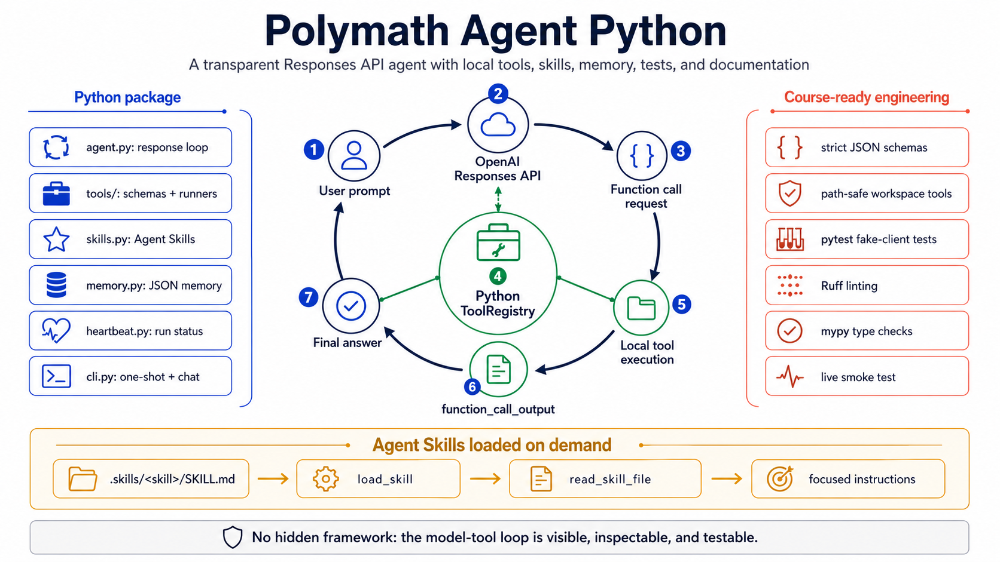

Readable agent engineering
A Python agent you can actually understand.
Polymath Agent Python exposes the real Responses API tool loop, local tools, Agent Skills, memory, heartbeat status, tests, and documentation.
The loop
One model turn, many visible steps.
The model asks for a function call, Python executes it through the ToolRegistry, and the result returns as function_call_output until the model has enough context to answer.
-
01
User prompt
A question enters through the CLI in one-shot or chat mode.
-
02
Responses API
The model receives instructions, schemas, and the current user input.
-
03
ToolRegistry
Strict tool names and JSON arguments route to local Python functions.
-
04
Final answer
The loop continues until the model returns normal assistant text.
Architecture at a glance
The README hero is the map.
The infographic shows the package modules, execution flow, safety boundaries, tests, and on-demand skill loading in one inspectable picture.
Local capabilities
Small tools with clear boundaries.
The agent can inspect projects, search source, fetch public pages, load skills, and keep explicit memories while preserving readable Python seams.
Path-safe file reads and directory listings stay inside the configured workspace.
Regex search skips generated directories and returns concise file-line matches.
Skill metadata is visible up front; full instructions load only when relevant.
Plain JSON files make local state easy to inspect during coursework.
Course-ready
Built to be read, tested, and defended.
The deterministic test suite uses a fake OpenAI client, while the live smoke test checks the real model-tool loop when credentials are available.
Run it
Clone, install, test, chat.
git clone https://github.com/BirgerMoell/agents-python
cd agents-python
python3 -m venv .venv
source .venv/bin/activate
python -m pip install -e ".[dev]"
python -m pytest
polymath-agent